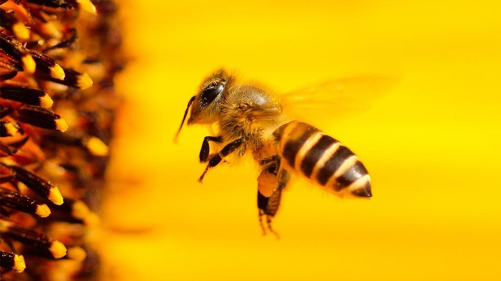

Жизненный цикл пчелы
Жизненный цикл пчелы - это удивительный и сложный процесс, включающий в себя различные стадии развития, каждая из которых имеет свои особенности и функции. От яйца до взрослой пчелы, этот цикл представляет собой удивительный путь, на котором каждая пчела играет свою уникальную роль в жизни пчелиной колонии.
Яйцо: Жизненный цикл пчелы начинается с яйца. Матка откладывает яйца в специальные ячейки сот. Яйца очень маленькие, по размеру семян мака, и содержат будущего потомства. Они развиваются в течение нескольких дней, прежде чем превратиться в личинки.
Личинка: После того, как яйцо вылупляется, из него появляется личинка. Личинка потребляет пчелиное молоко, называемое гельметом, которое предоставляется рабочими пчёлами. В течение этого этапа личинка активно растет и развивается, проходя через несколько стадий молчания.
Куколка: Когда личинка достигает определенного размера, она заворачивается в свою собственную коконоподобную оболочку, которая называется куколкой. Внутри куколки происходит трансформация тела личинки во взрослую пчелу. Этот процесс занимает несколько дней.
Взрослая пчела: После завершения трансформации куколка вылупляется во взрослую пчелу. Взрослые пчелы покидают ячейки сот и присоединяются к остальной популяции улья. Они сразу же начинают свою работу, выполняя различные задачи в улье в зависимости от своего возраста и физических характеристик.

Функции взрослой пчелы: Взрослые пчелы могут выполнять различные функции в пчелиной колонии, включая сбор нектара и пыльцы, строительство сот, кормление личинок и матки, охрану улья, вентиляцию и многое другое. В течение своей жизни взрослая пчела может изменять свои обязанности в зависимости от потребностей улья.
Продолжительность жизни: Продолжительность жизни взрослой пчелы может сильно варьироваться в зависимости от её роли в улье. Рабочие пчёлы, которые выполняют трудоёмкие задачи в улье, такие как сбор нектара, строительство сот и уход за потомством, обычно живут всего несколько недель. Это связано с высокой интенсивностью и физической нагрузкой, которую они испытывают в процессе своей работы.
Самкам-маткам предназначена наиболее продолжительная жизнь в улье. Они могут жить несколько лет, обеспечивая размножение и устойчивость пчелиной колонии. В течение своей жизни матка способна откладывать огромное количество яиц, обеспечивая постоянное пополнение численности пчел в улье.
Различия в продолжительности жизни разных видов пчёл связаны с их уникальными ролями и функциями в пчелиной колонии. Рабочие пчёлы, тратя свою энергию на трудоёмкие задачи, живут короткую, но насыщенную жизнь, в то время как матки и дроны, выполняющие менее физически нагруженные задачи, имеют возможность жить значительно дольше.
Стадии жизненного цикла пчелы тесно связаны с её физиологическими изменениями и функциональными особенностями. Например, в первые дни своей жизни пчела выступает в качестве уборщицы, очищающей ячейки сот от остатков и мусора. Затем она может перейти к кормлению личинок, выработке воска для строительства сот или сбору нектара и пыльцы.
С возрастом и опытом взрослая пчела может менять свою роль в пчелиной колонии. Например, молодые рабочие пчёлы чаще всего занимаются сбором пыльцы и нектара, в то время как более возрастные пчёлы могут быть назначены на другие задачи, такие как обслуживание потомства или защита улья.
Кроме того, жизненный цикл пчелы может быть затронут внешними факторами, такими как погода, наличие пищи и наличие паразитов или болезней. Например, неблагоприятные погодные условия или нехватка пищи могут существенно сократить продолжительность жизни рабочих пчёл, так как им будет нехватать ресурсов для поддержания собственного здоровья.